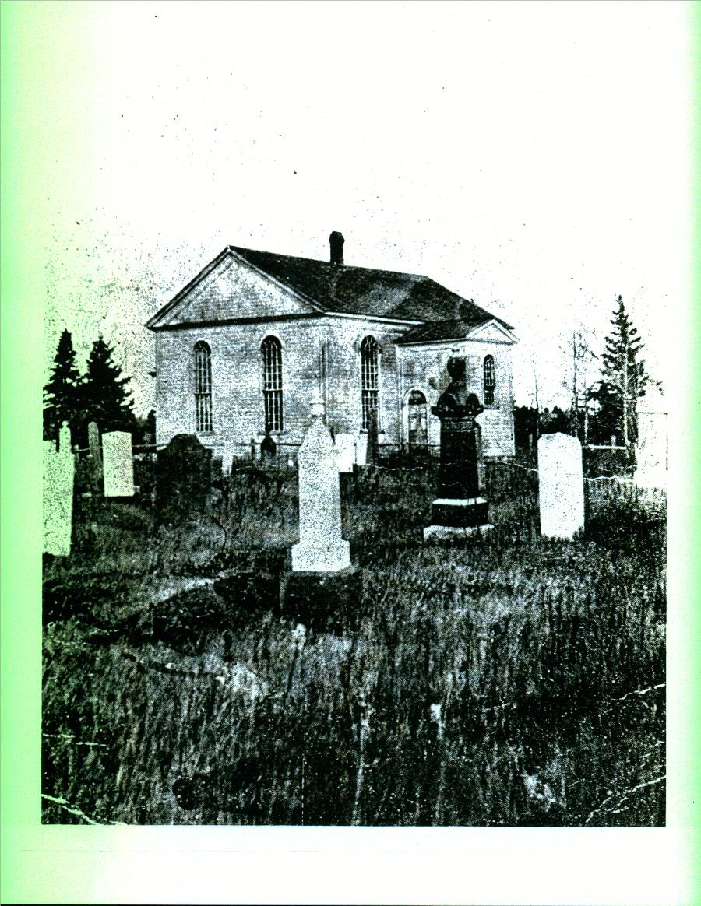

The Family Chronicle
No. 75 July 2, 2004
__________________________________________________________________________________

The first St. Stephen’s Church was opened in Black River in 1836
Janet (Watling) Godfrey
The Miramichi Press of December 21, 1977 carried the following:
FUNERAL IN BLACK RIVER BRIDGE
The funeral service for Mrs. Janet M. Godfrey, widow of John R. Godfrey of Black River Bridge, was conducted at her home Dec. 10 at 2 p.m.
Rev. J. Posno conducted the service. The organist, Mrs. Cameron Russell, played two hymns, “The Lord is My Shepherd” and “Safe in the Arms of Jesus.” “Amazing Grace” was sung by a quartet.
The honourary pallbearers were Rankine MacLean, George Adams, Sr., J.D. MacRae, Elliott Cail, John A. Godfrey and Kenneth Cameron.
Active pallbearers were Alexander Newton, Donald Newton, Norman Newton, Winfield Murdock, Austin Godfrey and Neil Watling.
The body was placed in the Black River Bridge Memorial Vault to await interment in the spring.
Born at Black River Bridge, she was the daughter of the late Jubal and Grace M. (MacDonald) Watling. She was a member of St. Paul’s Presbyterian Church, Black River Bridge, a life member of John Robertson WMS, a former member of the Presbyterian Women’s League, a former member of the Women’s Institute, and she took a very active part in all church affairs.
Horsefeathers
This expression was quite common in polite society but is seldom heard anymore. Even horse%*#* has become too mild an expression to express unbelief.
Horsefeathers is, or was, also a building product. Following WW2 a product, known as brick siding, came on the market. Brick siding came in sheets about a foot wide and eight feet long. The exposed surface looked like brick but the backing was a form of insulation – like ten test.
War years had been good economically and many people decided to improve their properties by adding brick siding. In addition to appearance, it provided additional insulation to old houses.
Before installing the siding, the uneven surface of cedar shingles had to be leveled. This was accomplished by adding horse feathers. a thin strip of tapered wood nailed horizontally over the shingles. The siding was then added.
Poetry
My Dad liked to recite poetry and taught me to do the same. Here is one poem I remember:
Standing at the foot, boys
Gazing at the sky
How can you get up, boys
If you never try?
Though you be discouraged
Never be downcast
Try and try again, boys
You’ll succeed at last
Noon Chores
Perhaps because we lived so close to the school, there were usually chores to be done when home for lunch. One such chore was watering the cattle at noon hour in the winter.
Although we had a water pump in the house there was none in the barn, therefore, one had to either carry water by the pail from the house to the barn or take the cattle to the brook. Not a problem in the summer but winter was another story. The only open portion of the brook in the winter was directly under the Miller’s Bridge. Even at that, the ice built up as a result of the rising and falling tide in the cold weather and had to be chipped with an axe so the cows could climb down to the water.
When Norm and moved to the Miramichi High school, it became my turn. Usually, Mum wrote “an excuse” to the teacher so we could leave school about 11:00 o’clock or so to chip the ice, let out the cows, herd them down to the brook, wait while they drank, herd them back to the barn and time them up. The task always took more time if they had to break a path through new and heavy snow. Seems to me that one cow died as a result of falling into the icy water.
The Chronicle is an occasional newsletter prepared by Don Glendenning and posted on the family website. It is designed to share information about my family, community and the times in which I grew up. While every effort is made to be accurate, errors are likely to occur. Comments, enquiries and information may be sent to 62 Queen Elizabeth Drive, Charlottetown, PEI, C1A 3A9. Tel: 902-892-5859 Email: don@glendenning.net Web: www.glendenning.net